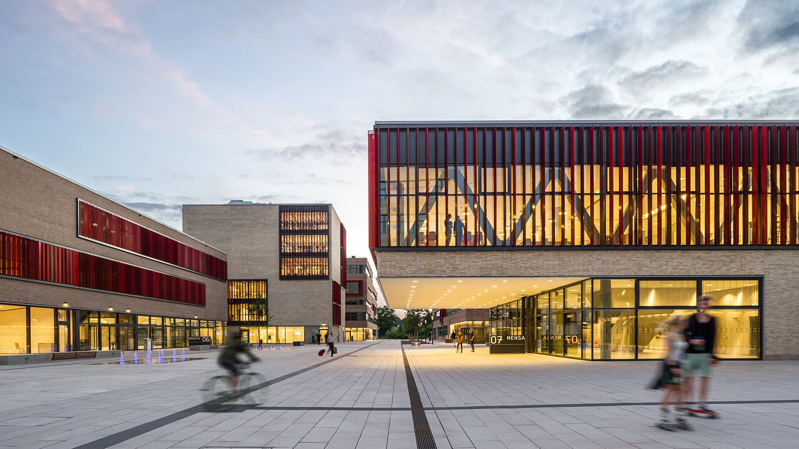

Fachbereich feiert Insolvenz
Die Fachschaft feiert ihre diesjährige Insolvenz. Gefeiert wird im Campus Mülheim an der Ruhr
Die Fachschaft feiert ihre diesjährige Insolvenz. Gefeiert wird im Campus Mülheim an der Ruhr
Die Initiative "Digitale Bildung für Alle" bietet kostenlose Workshops und Kurse, um digitale Kompetenzen in unserer Gemeinde zu fördern. Melden Sie sich heute an und werden Sie digital fit!

Entdecken Sie die Geheimnisse der Ägyptischen Kunst in der neuesten Ausstellung des Stadtmuseums. Tauchen Sie ein in eine Welt voller historischer Wunder.
 In collaboration with ASTOC Architects and Planners
Im Herzen des Ruhrgebiets gelegen, vereint die Hochschule Ruhr West (HRW) moderne Lehre mit praxisorientierter Forschung. Seit ihrer Gründung hat sich die HRW zu einer dynamischen und innovativen Bildungseinrichtung entwickelt, die Studierenden exzellente Bildungsmöglichkeiten bietet.
Die HRW bietet eine breite Palette von Studiengängen in Technik, Wirtschaft, Naturwissenschaften und Informatik. Jeder Studiengang ist darauf ausgerichtet, den Studierenden fundiertes Fachwissen und praktische Fähigkeiten zu vermitteln. Unsere modernen Labore und engagierten Lehrkräfte gewährleisten eine Ausbildung, die sowohl theoretisch fundiert als auch praxisnah ist.
Unser Campusleben ist geprägt von einer lebhaften und inklusiven Gemeinschaft. Mit einer Vielzahl von Studentenvereinigungen, Kulturveranstaltungen und Sportangeboten gibt es immer Möglichkeiten, neue Freunde zu finden und Interessen zu verfolgen. Unsere Bibliotheken und Lernräume bieten ideale Bedingungen für erfolgreiches Lernen und Forschen.
An der HRW wird Forschung großgeschrieben. Unsere Projekte in Zusammenarbeit mit Industriepartnern und anderen Forschungseinrichtungen tragen zur Lösung realer Probleme bei und stärken die Verbindung zwischen Theorie und Praxis.
Die HRW pflegt Partnerschaften mit Universitäten weltweit. Diese Kooperationen bieten unseren Studierenden und Mitarbeitern die Möglichkeit, internationale Erfahrungen zu sammeln und globale Netzwerke aufzubauen.
Unsere Alumni haben beeindruckende Karrierewege eingeschlagen. Ihre Erfolgsgeschichten zeigen, wie ein Abschluss an der HRW Türen öffnet und vielfältige berufliche Möglichkeiten schafft.
Interessierte können sich auf unserer Website über das Bewerbungsverfahren und Fristen informieren. Unser Admissions-Team steht bereit, um Fragen zu beantworten und Unterstützung zu bieten.
An der Hochschule Ruhr West erwartet Sie eine inspirierende Lernumgebung, die Sie auf Ihren beruflichen und persönlichen Weg optimal vorbereitet. Wir freuen uns darauf, Sie auf diesem Weg zu begleiten und zu unterstützen.